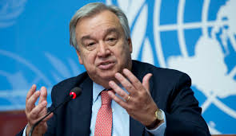
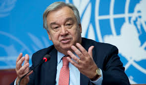
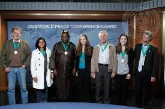
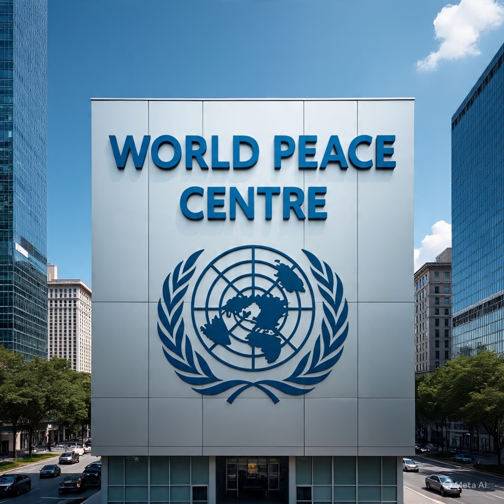

WORLD PEACE CENTRE
405 East 42nd Street, New York, NY10017 USA
Contact
About Us


World Peace Award is the most prestigious international recognition of
excellence in humanitarian service.
It rewards the creative achievements and contributions of both public and
private service institutions that
lead to a more effective and responsive
humanitarian intervention in countries worldwide.
Through an
annual competition, the UN World
Peace Conference/Awards promotes the role,
professionalism and visibility in humanitarian service.
WORLD PEACE CONFERENCE/AWARD
UN BACKED ORGANIZATION
Applications Open for the
2025 World Peace Conference/Award
Date: October 31, 2025
Venue: Mandarin Oriental Hotel, 80 Columbus Circle, New York.
Nomination is based on recommendations sent by media organisations,
private organisations and individuals to the national library, who
forwards such information to our headquarters.
The trip is sponsored in collaboration with the United Nations and the
candidates after the Award become Ambassadors of Peace
 

ANTONIO GUTERRES
Secretary-General of the United Nations
.jpg)
DR. FILIPPO GRANDI
Grandi started his career in the office of the United Nations
High Commissioner for Refugees (UNHCR)
in 1988, and has served in a variety of countries, including
Sudan, Syria, Turkey, and
Iraq after the Gulf War. He also headed a number of emergency
operations including in Kenya, Benin, Ghana, Liberia, the Great
Lakes Region of Central Africa, Yemen and Afghanistan.
Between 1996 and 1997, he was Field Coordinator for UNHCR
and United Nations humanitarian activities in the Democratic
Republic of Congo during the civil war. From 1997 to 2001,
he worked in the Executive Office of the UNHCR in Geneva,
as Special Assistant and then Chief of Staff. From 2001 to
2004, he served as the UNHCR's Chief of Mission.
Grandi then moved to the United Nations Assistance Mission in
Afghanistan (UNAMA) in 2004, where he served as Deputy Special
Representative of the Secretary-General responsible for
political affairs from 2004 to 2005. In 2005 he moved to UNRWA,
first as Deputy Commissioner-General and then from 2010 as
Commissioner-General until 29 March 2014.
On 11 November 2015 UN Secretary-General Ban Ki-moon announced
his intention to appoint Grandi as the next United Nations
High Commissioner for Refugees to take office in 2016.[4] On 23
November 2020, the United Nations General Assembly re-elected
Grandi for an additional 2.5 year mandate as High Commissioner
for Refugees Since 2019.
Grandi has been a member of the World Economic Forum High-Level
Group on Humanitarian Investing, co-chaired by Børge Brende,
Kristalina Georgieva and Peter Maurer.
During the 2024 Summer Olympics opening ceremony, Grandi was
presented with an Olympic Laurel, the third person to be honored,
for his work in helping refugee athletes.
In July 2025, the Spanish government awarded him the Grand Cross
of the Order of Isabella the Catholic

CROSS SECTION OF 2023 CANDIDATES IN NEW YORK
REGIONAL OFFICES
United Kingdom
UN House
Humanitarian Department
Plot 3, Whitehall Ct
London SW1A 2EL, UK.
Canada
UN House
Humanitarian Department
205-206 Albert Street
Ontario K1P 5G8, Canada
United Kingdom
Plot 3, Whitehall Ct
London SW1A 2EL, UK.
Spain
UN House
Humanitarian Department
46930 Quart de Poblet,
Valencia, Spain
Liberia
UN House
Humanitarian Department
1 & 2 Street Tubman Boulevard
Sinkor, Monrovia, Liberia
Switzerland
UN House
Humanitarian Department
Palace of Nations Av.
Av de la Paix 8-14
1211 Geneve, Switzerland
South Africa
UN House
Humanitarian Department
351 Francis Baard Street
Pretoria Central, South Africa
Thailand
UN House
Humanitarian Department
10200 330/3 Krung
Kasem Road, Bang Khun Phrom
Phra Nakhon Bangkok Thailand
Japan
UN House
Humanitarian Department
5 Chome 53-70
Jingumas, Shibuya, Tokyo Japan
Nigeria
UN House
Humanitarian Department
Plot 617/618 Diplomatic Drive
Central Business District, Abuja
Denmark
UN House
Humanitarian Department
City Memorvej 51-2100
Copenhagen, Denmark

405 EAST 42ND STREET,
NEW YORK, NY10017 USA.